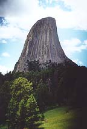
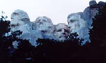
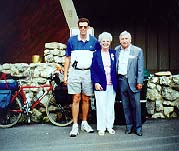

|
Home |
Introduction |
Facts & Answers |
Journal Days 1-10 |
| Journal Days11-20 |
| Journal Days21-30 |
| Journal Days31-37 |
| Journal Days37-47 |
| Journal Days48-58 |
| Journal Days59-70 |
| Final Days |
Bike Ride USA Journal
Day 21 Sulphur to Hawloton. 50 miles. I wanted to take a light day. I arrived early onto town so decided to get a hair cut. Happy Mom? This place has a lot of bars and a city park to camp. I took a shower at the local pool and made camp. The weather is great but a huge storm is coming from the west. A guy at the barber said the next town had great 1lb burgers. Next town 15 miles. It is 6:00. Gotta go. Time to pack. The storm looks as if it is 10 minutes away. It is so great to watch a storm approach from hours away. The Montana Big Sky is everything I have ever read about. One can just sit in one spot and watch a storm cloud soak one area while I am here dry warm and in the sun. It is 15 miles to town for a great burger and the wind is behind me. No problem. I can beat the storm. I was riding about 25 mph when the storm caught up to me. The first gust of wind knocked me 3/4 into traffic and then the rain started in buckets. My back was soaked when I got to town. A town with a school, Post Office and a cafe. "Big Town". I walked into the cafe and a very heavy gentleman recognized me from the road. He passed me about 10 miles back. After I ordered my 1lb burger w/fries we got to talking. He was the District Judge and as he was leaving he bought my dinner. Good Company, Good Food and it was free. Gotta love it! When the rain stopped I set up camp behind the cafe. The couple that owns the cafe is trying to sell because he the cook has cancer. 65 miles.
Day 22 Shamut to Billings, 75 miles The ride was great. I am starting to wake up each morning as though I can ride forever. My knees butt and legs are starting to love this stuff. Now I am ready for the Rockies. Opps I already passed them. My ride had a 20 mile stretch that was flat and straight. The wind was at my tail and life was good. Camped out at the Garden Ave Campground. I went to the bars that night and had nachos for dinner. I didn't like Billings. Too big.
Day 23 Billings to Hardin 50 miles. Took Hardin Rd a frontage Rd. I could not have asked for a better ride. 40 miles of it was straight and with the wind. A couple of old ladies stopped to ask me directions some place and in return I asked them to follow me and tell me how fast I was moving. They clocked me at 35 mph. I did not have an once on sweat or feel any wind in my face. I stopped for a big time show of the Reenactment of Custers Last Stand. A big, once a year deal for the town of Hardin. It later had a street dance in downtown. I ended up going to the street dance with the camp mgr and her little sister and friend. The Mgr was also a school teacher. She knew 1/2 the town. It was a good thing I got my hair cut a few days back because everyone thought I was her date. In actuality, I only needed a ride to town and she was going.
Day 24 Hardin to 6 miles out of Ashland. 85 miles Hwy 90 to 212. Stopped at Custers Last Stand actual site. Little Big Horn. I went through a lot of Indian reservations. They are run down towns and run down homes and stores. I have acquired a lot of information from the locals on why this is. I did not like the answers. It is too bad, there doesn't seem to be any improvement in the near future. Lots of Beer and Garbage along the road.
Day 25 Ashland to Alzata 95 miles 200-3-212. Kicked Butt Today. I felt great. I was going to stop at Hammond or Boyes however the towns consisted of only a Post Office. I also went through a construction zone. My bike was sliding side to side all the way but I was still keeping up with the cars. I would have gone farther but the next town was over 30 miles away. In Alzata, I stopped at a Biker Bar. As I walked in 1/2 the bar knew me since I passed them and they passed me during the delays on the road. The bar sign outside said "Cheap Drinks and Lousy Food" I had to stop. I had a burger and a few drinks. $2 beers and OK food. I camped that night behind the bar with the free roaming ducks and peacocks all around me. Only in Montana.
|  |
| Devils Tower, Wyoming
|
Day 26 Alzata to Devils Tower/Huwlet. 50 miles. I did the Red Bed Walking Loop while at the tower. It was great. Worth the side trip. I spent the night at this little S---- Hole of a place. People have grass, put in a cheap shower and charge people to camp out. Many don't even clean the bathroom, nor pick up the place. I wonder how anyone can look you in the eye and ask for money for these places. I had pizza that night and read the paper for 2 hours. There is no ATM machine for 35 miles and I have $7.00 in my pocket. Not Good!
Day 27 Huwlet to Deadwood. 68 miles. Today was a hard ride. No miles were free. All against the wind and at a slow elevation climb of about 2500ft. The last 10 miles were the worst. Deadwood(Where Wild Bill Hickock was shot and Dances with Wolves was filmed). It is a gaming town that is geared for travelers. Lots of bars, so I had to hit a few. I went to the all you can eat at the Silverado Hotel. In the morning I spent 2.5 hours typing this in. I have 45 miles to Mt Rushmore and I want to be there for the 4th of July fireworks. It is supposed be 90 degrees today and like lately, there will most likely be a headwind. *I am getting used to this on-you-own-stuff, but I need to talk to some bikers. I have only seen one since Missoula and he was going the opposite direction. At times I would not mind some biker company. You finish a 95 mile day and you want to tell someone. *I thought about Deadwood being a possible place to live but after I talked to a cop (The brother of the lady the owns the campground) I think the politics involving the town and Indian population is to much for my liking.
|  |
Mt. Rushmore
|  |
| Painter, Wife and Lincoln Sculpter
|
|
Day 28 I made it to Mt Rushmore. The only reason I took this route. I arrived late in the day and got a sneak peak at the Mountain. The closest campground was $23 and I KOA. Though KOA are always nice they are by far the most expensive and I am doing a protest of them. I showed them. I found a spot 1/4 mile up the road, camped for free and snuck in to use their facilities and eat at the restaurant. It nice to stick it to them once in a while.
Day 29 It is July 3 and for the first time in history Mt Rushmore was going to have fireworks. I road my loaded bike up and down the Black Hills of South Dakota. First I went to see the Crazy Horse monument in the making. this was the first year that it was open to the public and I has been in the works for 50 years. Only the face is complete. An awesome site and something I can tell my kids about someday. I wandered through a few towns and headed to Keystone 18 miles away and 2 miles from Rushmore. I hung out in for a while, talked to some locals and tourist and eventually made it to Mt Rushmore. While at one of the gift shops 3 people approached me and asked me my story. I however was in awe of them since one of them was one of the sculptors of Lincoln on Rushmore, the other was his wife, and the younger guy was a famous artist doing a portrait of the sculptor. They were there to take part in the celebration. At 4:00 I made it to Mt Rushmore and established my territory. For the next 8 hours until the fireworks at 12:01 midnight 25,000 people were going to be herding in. At 11 the sky was clear with clouds miles in there are framing the Faces of Rushmore. At 12:00 fog/clouds creeped in, covered the mountain and by 1:00 am 25,000 people went with that show being canceled. Being from California I tried to start a riot but nobody wanted to. I snuck into a camp ground that night and shared a site with a bunch of partiers. I had a few beers with them and went to bed.
Day 30 Keystone to Scenic. 67 miles. I camped out on an Indian Reservation at the old Museum. Of the entire 23 people in town, I met 10. 7 were drunk Indians and the other 3 were the store and bar owners. (White) After I set camp I made my way to talk to the locals. Within 3 minutes they hit me up for beer. I figured it was a small price to pay for peace of mind. 4 of us drank the beer and talked about the town and how the Indian population is looked down upon. As the night wore on several other Indians made there way to our conversation. The town used to be pretty developed at one point based on what the locals said, but now only a general store and a bar were open. At about 9:00 a big storm hit and we all dashed to our proposed shelters. One of them had the idea that my tent was big enough for 2. NOT!!!!!!!!!!!. I am assuming they went to one of the many abandon buildings down the road. This was one of those nights that I hoped Mother Nature wouldn't get too bad, but remain bad enough to keep the locals away from me. If I live through the locals, the storm and the bugs tonight, I guess things will be dandy. Bill, Elinora, George, Pat. were the Indians with whom I talked.
|